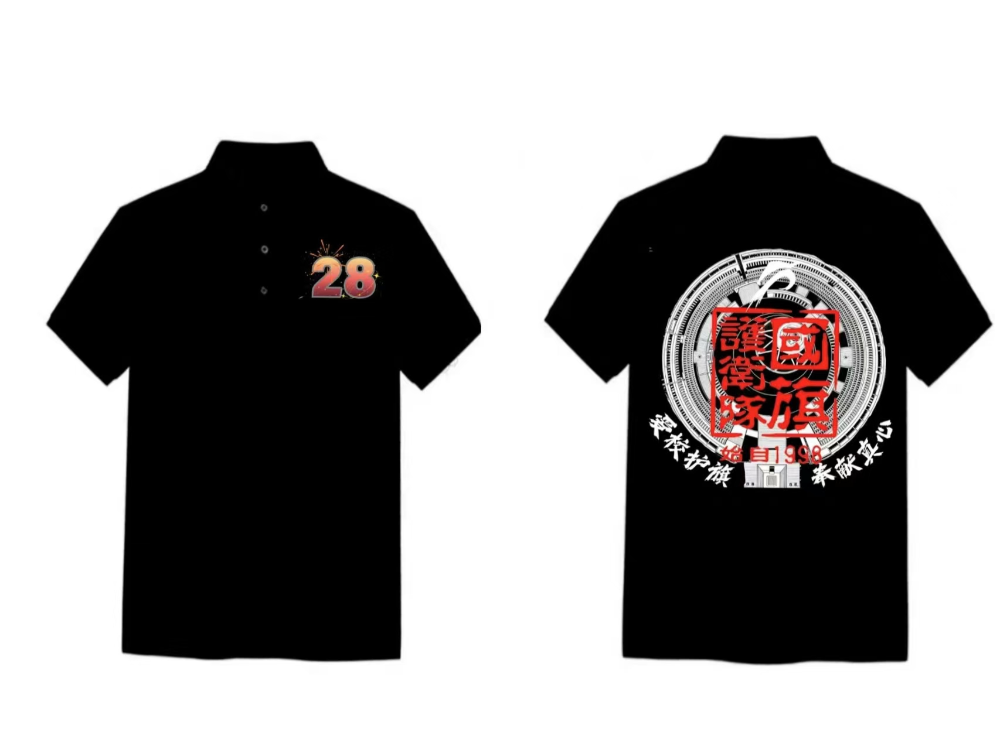

队衫设计 3

设计说明：
队衫正面的数字“28”中融入雪和烟花元素，展现训练中的温情记忆。
队衫反面的设计以东门广场旁边的标志性建筑为背景，此为大训练的必经之路，其上加入队标和队印，体现 国旗护卫队的凝聚力，方形和圆形的融合也具有美感，图案两侧的“爱校护旗，奉献真心”体现了国护队员 的初心。
队衫正面的数字“28”中融入雪和烟花元素，展现训练中的温情记忆。
队衫反面的设计以东门广场旁边的标志性建筑为背景，此为大训练的必经之路，其上加入队标和队印，体现 国旗护卫队的凝聚力，方形和圆形的融合也具有美感，图案两侧的“爱校护旗，奉献真心”体现了国护队员 的初心。